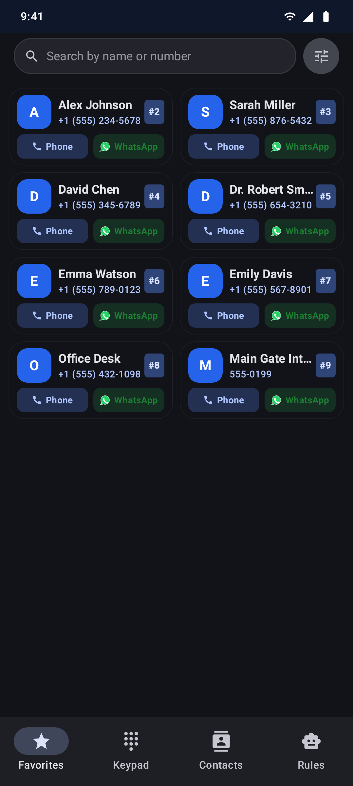
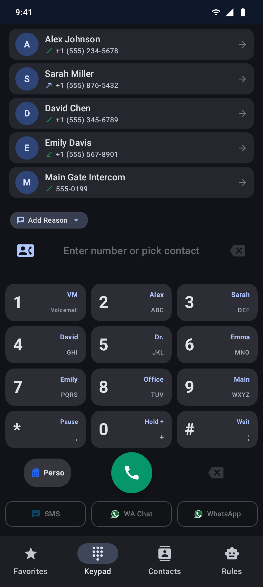
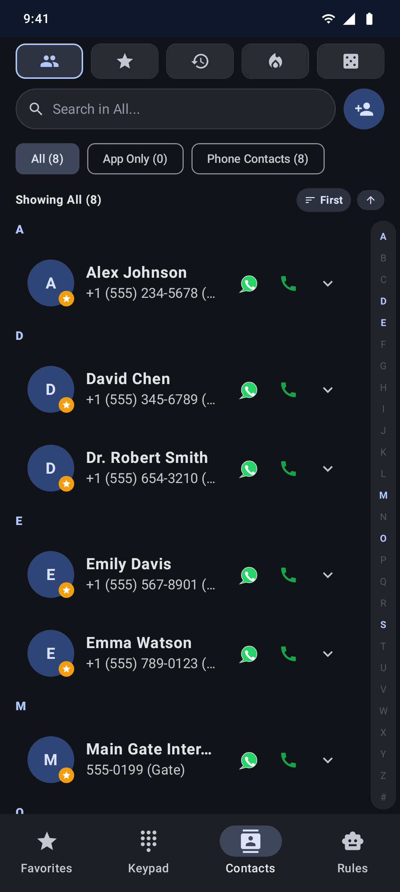

A fast, modern Android default phone dialer. Integrated dual-channel calling (Cellular & WhatsApp), caller automation rules, instant T9 keypad search, and speed dial.
Built exclusively for Android with Jetpack Compose & Material Design 3.



No extra app switching — seamless phone and OTT messaging together.
Initiate standard phone calls or direct WhatsApp voice and message chats directly from any contact row or recent log entry.
Set custom automation triggers per caller or group — automatic actions, priority alerts, and flexible call management.
Instant predictive search across your contacts and recent call history right from the dial pad as you type.
Customizable visual favorites grid and rapid long-press key shortcuts (2–9) for instant calling.
Handles incoming, outgoing, and ongoing calls with in-call controls and modern Material 3 Jetpack Compose UI.
Zero telemetry tracking and no advertising. Your contacts and logs remain private on your device.
Review change logs and download current or prior releases for your Android device.
Tap the download button above on your Android device and confirm the browser download.
Open the downloaded APK from notification or Files app, allowing unknown sources if prompted.
Launch OmniDial and approve the system dialog to set it as your Default Phone App.